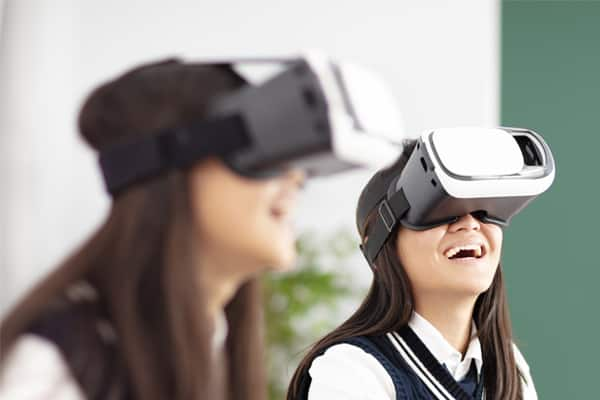

Overview
I am very interesting in using VR to create some games or special scenes because I think there are still very few interesting VR games and software on the market currently. My goal is to design a game or scene that allows people to truly experience an immersive feeling.

For example, I can build a scene about dreams, enabling users to imagine themselves in a completely different world and control it. In this dream world, users can experience things that cannot be achieved in reality, explore supernatural elements, and satisfy their longing for fantasy and adventure.
In addition, I also want to create a VR world full of magic. In this world, users can learn and cast various magics. Through the vibration feedback of the handle and the 3D stereoscopic effect, they can truly experience the feeling of having magic. For instance, users can wave the handle to cast magic and feel the vibrations and reactions of different magic effects. This kind of interaction will greatly enhance the immersion and fun of the game.
Through these designs, I hope to let more people experience the charm of VR, stimulate their imagination, and enjoy the fun of exploring the unknown in the virtual world. The potential of VR technology is endless, and I look forward to creating more rich and unique experiences in this field.